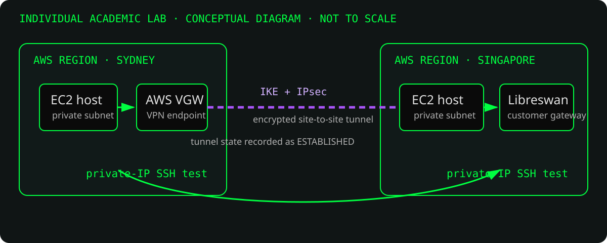

Individual academic project · CCC603 · Secure networking lab
An AWS Site-to-Site VPN Between Regions
A networking lab that helped me understand the parts behind a private connection: gateway roles, tunnel negotiation, address selection and testing the path rather than just the endpoint.
The question behind the project
The coursework asked me to connect two isolated AWS VPC environments representing Sydney and Singapore in a fictional banking scenario. I wanted to understand how the AWS-managed VPN endpoint and a software customer gateway fit together, and how to verify that internal traffic used the tunnel.
This is an individual lab and assessment scenario. It was not a deployment for a bank, a live financial environment or a production service.
Architecture and traffic flow
The Sydney VPC used an AWS Virtual Private Gateway. In Singapore, an EC2 instance running Libreswan acted as the Customer Gateway. The two endpoints negotiated an IKE/IPsec tunnel. Private-address SSH between instances was the connectivity check described in the report.

Implementation explored
Building the tunnel
- Created separate VPCs with non-overlapping address spaces for the two regions.
- Attached an AWS Virtual Private Gateway on the Sydney side and configured the remote gateway on an EC2 instance in Singapore.
- Installed and configured Libreswan, including IKE/IPsec settings and a shared secret kept out of this public case study.
- Selected AES encryption in the report and configured the VPN service to restart if the connection dropped.
Boundaries and safety
What the lab did not prove
- The report says one of the two AWS-provided tunnels was mainly configured for this demonstration; it does not verify full failover behaviour.
- The scenario and its connectivity checks do not establish production hardening, capacity, monitoring coverage or a security certification.
- The public article omits host addresses, keys, student identifiers and account-specific configuration.
Testing and learning
The report records the tunnel reaching an “ESTABLISHED” state with active IKE and IPsec Security Associations. It also records a successful SSH connection between the instances over their private IP addresses, and that a public-IP access attempt was blocked by the security-group setup.
One useful debugging lesson came from using the wrong endpoint identifier: the tunnel did not establish until I corrected the configuration to use the public Elastic IP. It reinforced the value of checking each endpoint and route systematically before changing multiple settings at once.
Questions I would explore next
The assessment discusses two-tunnel redundancy and automatic recovery as resilience concepts. The demonstration focused on one tunnel, so a useful next lab would test failover, tunnel monitoring and recovery with controlled conditions and documented evidence.